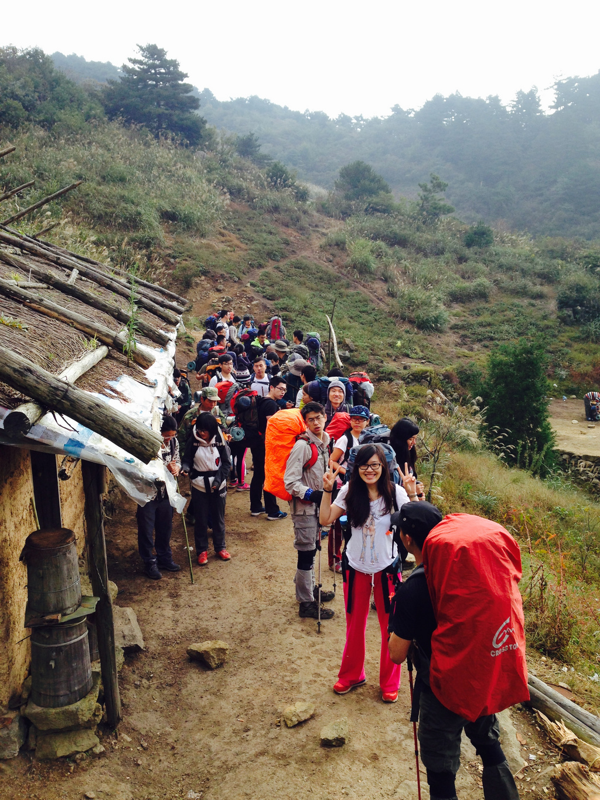
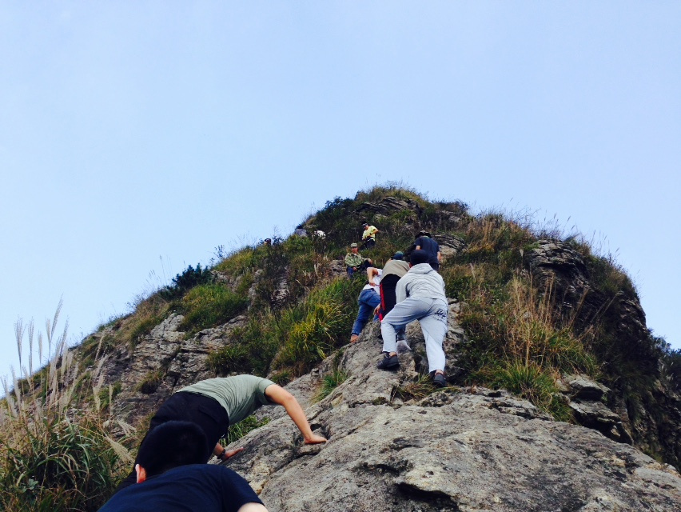
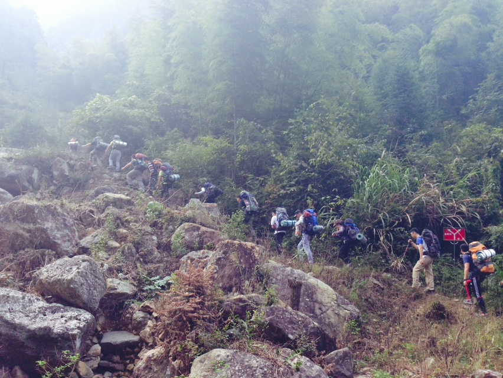
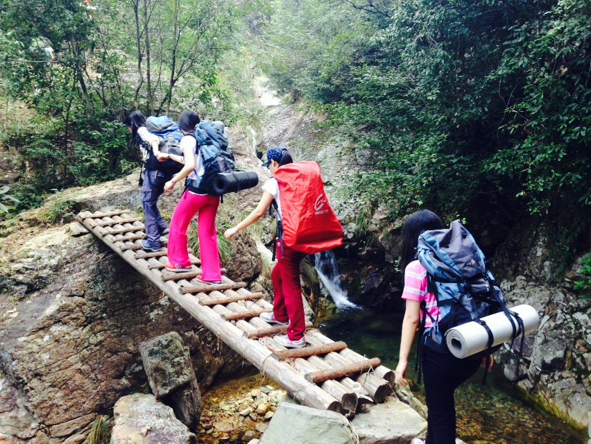
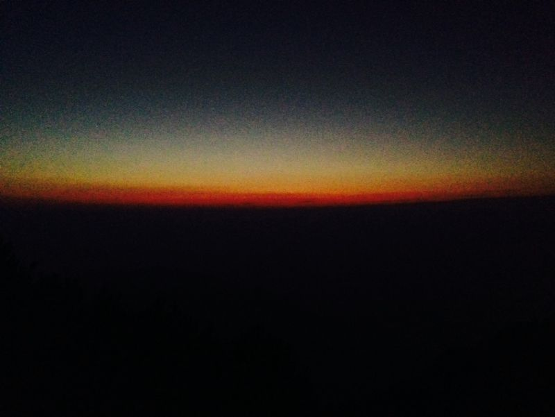
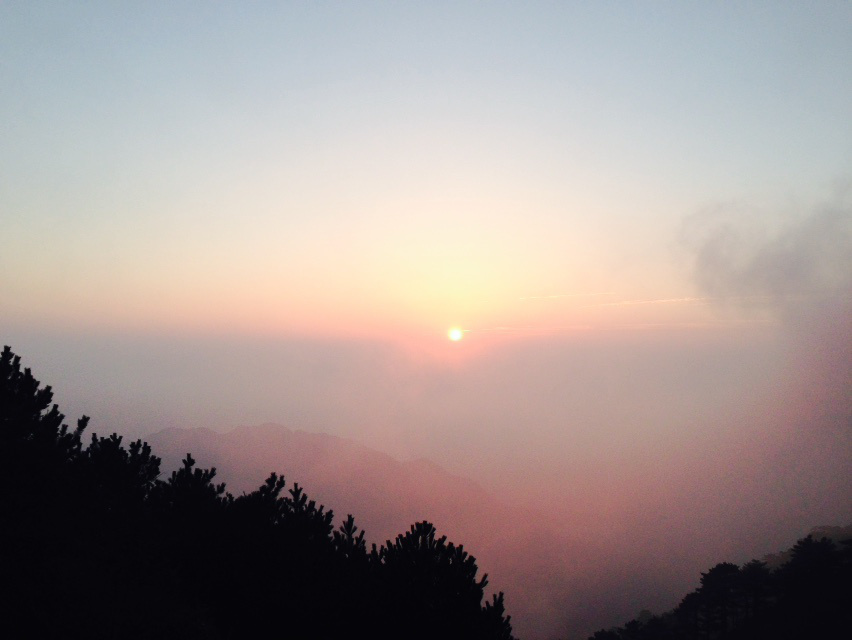
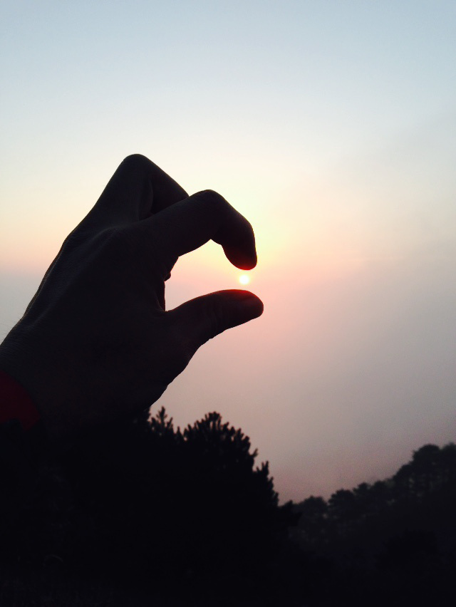

发信人: LittleLeon (里昂), 信区: outdoor
标 题: 【转载】记一件有意义的事---- 交大野协金紫尖
发信站: 饮水思源 (2014年10月10日13:03:49 星期五)
从未想过自己会在毕业后回到校园，像学生一样，无忧无虑的去体验一次说走就走的旅
行。这个十一还蛮闲的，被一个朋友说服，去参加了交大野协组织的一次徒步活动。起初
还因为自己的体力问题有些担忧，更怕无法融入这30多个年轻的学生而使旅行变得无聊。
可没有预料到的是，这竟是一次洗礼心灵的旅程……
有态度的团队，有态度的活动
从一开始的准备会，到领装备，到车上的破冰仪式，到整个活动的全程。野协这个团
队让我感触最深的就是两个字 ----- 态度。他们用自己的行动诠释着团队的精神 -----
认真、负责、谦卑、勇敢、善良、崇尚自然，每一个词用在这个团队的身上都不为过。
领装备时，协会的干事会示范每一件装备使用的细节，不停的巡视大家是不是没有听
懂，或操作不正确；破冰仪式上，一个个或温情或尴尬的小故事，引得大家阵阵欢笑，瞬
间拉近了每一个人的距离；登山过程中，领队、副队、押队、队医，每一个人都非常负责
任的照顾着身边的同学，为大家加油打气，使得行进非常有秩序，让参加的人倍感安全…
…短短两天的活动，每一个细节都能让我感受到野协的真诚和他们在准备时付出的心血。
 screen.width - 200){this.width = screen.width - 200}">
 screen.width - 200){this.width = screen.width - 200}">
 screen.width - 200){this.width = screen.width - 200}">
 screen.width - 200){this.width = screen.width - 200}">
夜空，日出，那一片恬静的山林
生活在城市中，每天忙忙碌碌，大部分的时间被工作占据，自己都没意识到自己处在
多么大的压力中。直到仰头，看见了那皎洁的明月，漫天的星光，洒在那一片恬静的山林
里。才意识到生活中忙碌的琐事，让我错过了生命中多少美好！从未在那样一个寂静的深
夜里见过如此美丽的画面 ---- 广阔、圣洁。我恨不能一直这样看下去，生怕一个眨眼，
便错过了那一刻的美好。
山林、溪水、清新的空气，每一处都净化着我的心灵。能在烦扰的世界中找到这样一
片僻静而优美的地方实属不易。本以为那夜空是美的极限，然而当第一缕阳光洒向山林的
那一刻，才悟出，大自然面前，一切都是那么的渺小，每一天都是新的开始，每一个人都
被阳光围绕着。一时间，那屡温暖的光仿佛能够驱散身上所有的阴霾，曾经的不快也便随
之释怀了，仅剩下那萦绕在身边的无尽的温暖。
 screen.width - 200){this.width = screen.width - 200}">
 screen.width - 200){this.width = screen.width - 200}">
 screen.width - 200){this.width = screen.width - 200}">
闲谈趣事
旅途中若是无趣事，便也算不得一次完整的旅行，至少那样的旅行并不能深深的刻在
我的脑海里。这里简单讲上一件，调剂一下乏味的生活。
“土地公公保平安！”
一进山，手机便没了信号，后来发觉这其实是一件大好事。至少，它让我们能把全部
的注意力都从自己原来的圈子里转移出来，去欣赏眼前的美景。到了傍晚，没了电子设备
，看星星，看月亮，谈人生便成了我们“老年团”的乐事。在经历了沉重的N个话题之后，
大家决定玩真心话大冒险。老胡是我们这里唯一一个勇敢的选择了大冒险的人。这么好的
机会一定不能放过他，于是，集体的智慧便在这种时候得到了最好的表现。我们的提议是
：去隔壁妹子的帐篷里，虔诚跪拜四角，不能笑，让土地公公保佑平安。老胡人很爽朗，
愉快的答应了。于是我们便蹲在帐外，看着他在里面虔诚跪拜四角，并且口中念念有词，
“土地公公保平安！保佑野协出行顺利……”还为学弟妹们解释，这是野协的传统……拜
老胡所赐，不知道从此以后，野协会不会真的留传下这个迷信的传统了。
如果我没有来，可能就错过你们了
一生当中很难遇到几个志同道合的人，或者让你很钦佩的人。生活就是这么奇妙，一
次旅行，都遇到了。
老胡
老胡是野协的老人，如今已经毕业了，但是每年仍然会回来参加一些野协的活动。他
虽没说，但是他的一举一动，都诉说着他对野协的感情。老胡高高瘦瘦的，从一开口，我
便听出是个东北的老乡，于是亲切感油然而生。一路上，他一直把自己当成是野协的干事
，照顾团队里的每一个人，教授大家一些野外生存的经验和常识。人前，老胡说话很幽默
，一路为我们唱歌、打气，是团队的主心骨。可当他走在团队最后面的时候，这个东北硬
汉也表现出了细腻的一面。他总是随手捡起路旁的垃圾，不抱怨，不张扬。还记得他淡淡
地说的那句，“大自然给了我们这么好的一切，我们应该爱护它，我只是想把那些好的品
质传承下去。”
赵学姐
如果说此行最佩服的人，便是赵学姐了。学姐很优秀，是法学院的硕士，毕业后在北
京有了安稳的生活、工作和家庭。但是得知母校最后一间实体书店宣告停业后，毅然放弃
了安稳的生活，回到了母校，撑起了这间书店。“不想让交大变成一所没有书店的大学”
学姐说的很平淡，却重重的敲在了我的心理。没有盈利模式，在所有的商人看来，都是很
致命的。但学姐却很坦然，因为那就是她。信念，让一个瘦弱的女孩变得如此强大，不畏
艰险。学姐，祝福你和曦潮能早日走出困境。世界上太需要你这样有正能量的人了，我们
永远支持你！
口哨哥
我不知道口哨哥叫什么名字，只记得，在我很累的时候，前方想起了欢快的口哨声，
有的有趣，有的优美。我一路上随着他小声的唱着，驱走身体的疲惫。
亮仔
上山的途中，亮仔走在我前面，每次看到走不动的我，亮仔总会伸出手，带我一步步
往前走。说来也怪，一个人走时那样艰难的路，两个人一起走便轻松了许多。亮仔，谢谢
你在我最需要的时候拉我一把，虽然我并不是你唯一牵过手的女人……
最后的最后……
回来两天了，心中依然无法平静，不时地，总会怀念那两天的点点滴滴，那夜的星空
，温暖的日出，那群相见恨晚的人，和那支朗朗上口的歌：
妹妹要是来看我
不要从那小路来
小路上的毒蛇多
我怕咬到妹妹的脚
妹妹要是来看我
不要坐那火车来
火车上的流氓多
我怕妹妹被别人摸
妹妹要是来看我
不要坐那飞机来
飞机上的大款多
我怕妹妹跟别人过
妹妹要是来看我
一定要从梦中来
梦中只有你和我
想干什么就干什么
……
PS：原帖见http://www.yiqixxx.com/e/viewQuan/326
--
这个杀手不太冷！
※ 来源:·饮水思源 bbs.sjtu.edu.cn·[FROM: 202.120.48.196]
|